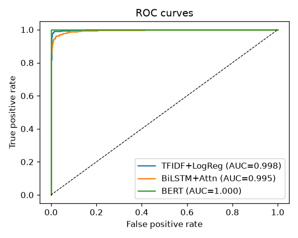
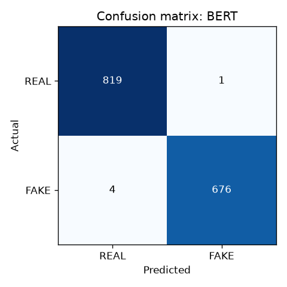
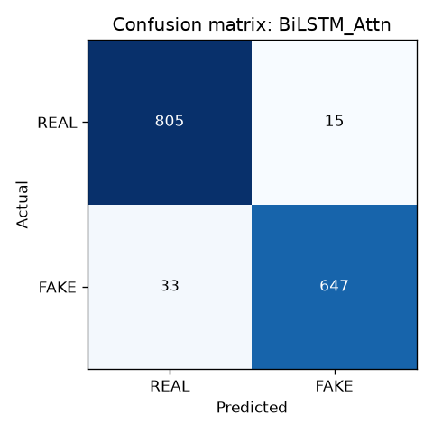

Don't Believe
Everything.
Know What's Real.
NewsX is an AI-powered fake news detection platform that analyzes news content, identifies misleading information, and helps users distinguish credible information from potentially false news.
Check the authenticity of news.
Paste a news headline, article or text to analyze its credibility.
Verification Analysis
3 Models EvaluatedHow the Models Detect Misinformation
Our platform compares three distinct machine learning approaches trained on 45,000 verified news articles from the benchmark ISOT dataset.
Keyword Counting Model
Uses TF-IDF (Term Frequency-Inverse Document Frequency) and Logistic Regression to weight 50,000 words and word pairs based on their statistical association with misleading vs. authentic articles.
| Architecture | TF-IDF + Logistic Regression |
| Feature Vocabulary | 50,000 N-Grams |
| Inference Latency | < 2 milliseconds |
| Key Advantage | Fast and transparent |
Deep Learning (BiLSTM)
A Bidirectional Long Short-Term Memory (BiLSTM) neural network that processes word sequences over time. Its learned self-attention layer assigns numerical weights to the exact words that shaped its verdict.
| Architecture | Bidirectional LSTM with Attention |
| Word Embedding | 128 Dimensions |
| Recurrent Layers | 2 Bidirectional Layers |
| Key Advantage | Captures sequence order and word flow |
Advanced AI (DistilBERT)
A state-of-the-art contextual transformer model fine-tuned specifically for news classification. It achieves over 99.9% accuracy by evaluating deep linguistic nuances that simpler models miss.
| Architecture | DistilBERT Transformer |
| Parameters | 66 Million Parameters |
| Attention Heads | 12 Multi-Head Blocks |
| Key Advantage | Highest accuracy, catches subtle fake news |
Empirical Test Benchmarks
All models were evaluated on 2,400 unseen test articles from the ISOT dataset (stratified 70/15/15 split). Source tags were stripped to prevent data leakage.
| Model Architecture | Type | Accuracy | Precision | Recall | Overall F1-Score |
|---|---|---|---|---|---|
| Advanced AI (DistilBERT) | Contextual Transformer | 99.9% | 99.8% | 100.0% | 0.999 |
| Keyword Model (TF-IDF) | Statistical N-Gram Baseline | 98.3% | 99.0% | 97.2% | 0.981 |
| Deep Learning (BiLSTM) | Word Sequence Network | 97.2% | 97.5% | 96.3% | 0.969 |
Evaluation Graphs & Confusion Matrices



About This Project
An end-to-end Machine Learning and Natural Language Processing project designed to evaluate information verification across multiple AI model architectures.
This project was designed, developed, and evaluated by:
Have questions about the dataset, model architectures, or code implementation? Reach out via email:
Open for academic inquiries, feedback, and collaboration.
Dataset & Rigorous Preprocessing
The system was trained on the ISOT Fake News Dataset provided by the University of Victoria Information Security and Object Technology research group, consisting of over 44,000 real and fake news articles.
To ensure fair and rigorous evaluation, articles were preprocessed to remove publisher tags (e.g. "Reuters"), eliminating data leakage so models learn semantic style and rhetorical tone rather than metadata shortcuts.